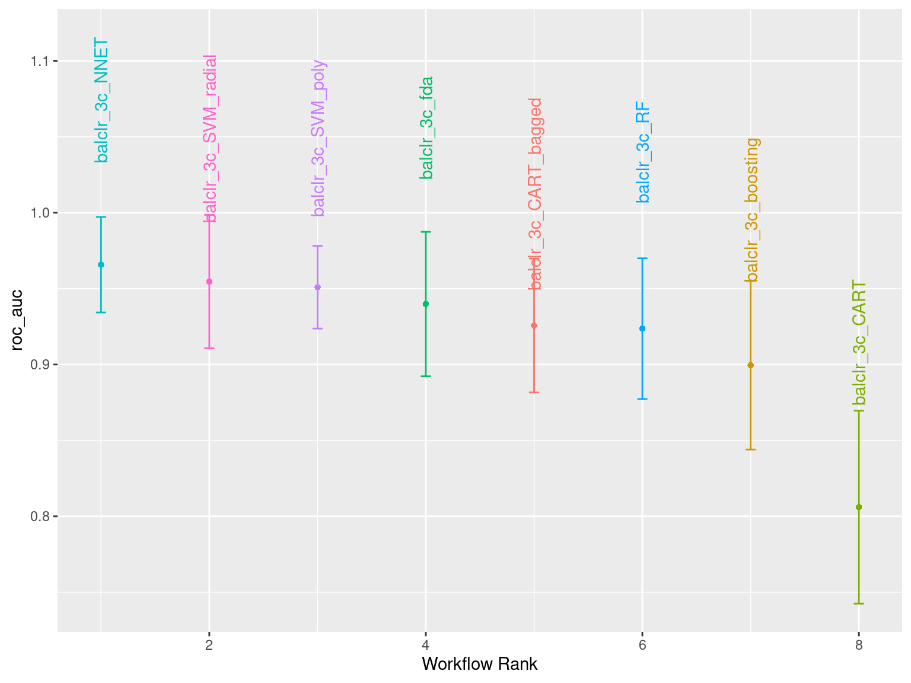
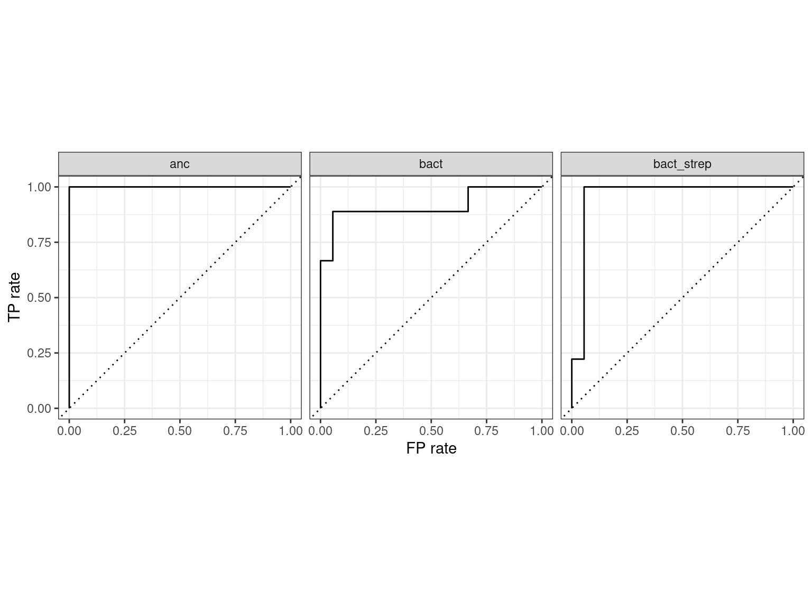
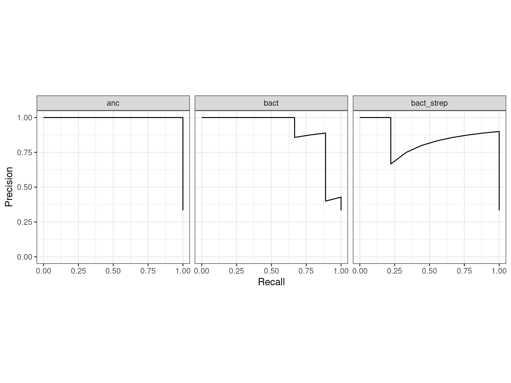
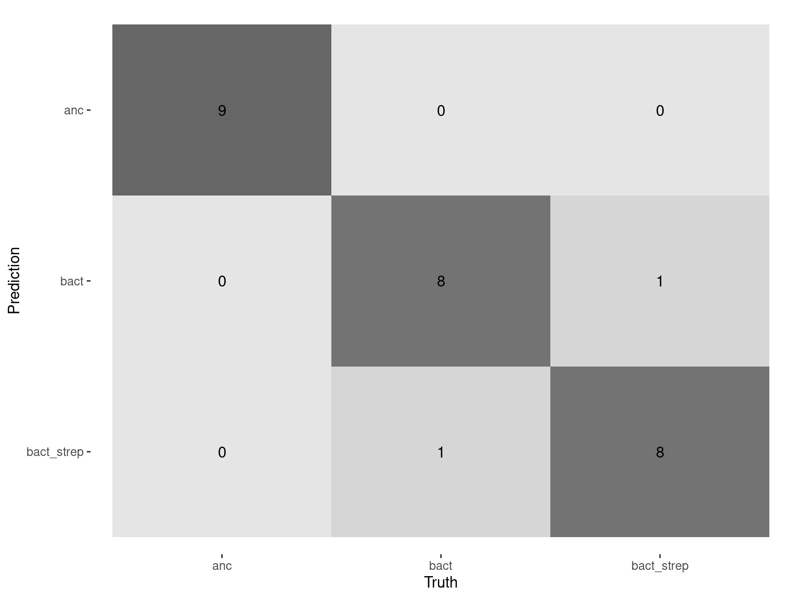
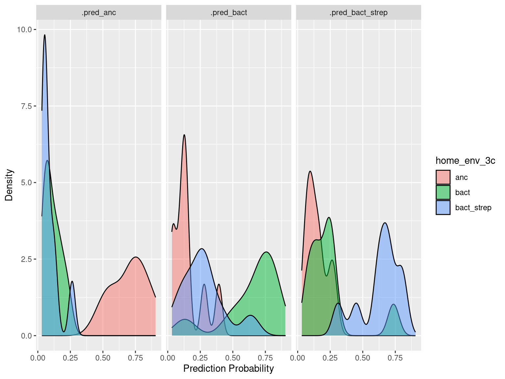

Machine learning evolutionary history from community structure
From the STR community composition workflow
1 Setup
Loads required libraries and sets global variables
2 Read
Read and format 16S amplicon data
Show/hide code
sptable <- readr::read_tsv(here::here(data_sp, "species_counts_md.tsv")) %>%
dplyr::mutate(transfer = day/7)
counts_f <- sptable %>%
dplyr::group_by(sample) %>%
dplyr::mutate(f=count_correct/sum(count_correct)) %>%
dplyr::ungroup() %>%
dplyr::mutate(measure_env_short = dplyr::case_when(
measure_env == "bact" ~ "Meas: B",
measure_env == "bact_strep" ~ "Meas: BS")) %>%
dplyr::mutate(home_env_short = dplyr::case_when(
evolution_env == "anc" ~ "Home: Anc",
evolution_env == "bact" ~ "Home: B",
evolution_env == "bact_strep" ~ "Home: BS")) %>%
dplyr::mutate(measure_env_short = factor(measure_env_short, levels = c("Meas: B", "Meas: BS")),
home_env_short = factor(home_env_short, levels = c("Home: Anc", "Home: B", "Home: BS")),
day = factor(day),
replicate = factor(replicate),
strainID = factor(strainID, levels = names(hambi_colors)))Read population density data
3 Data formatting
Separate the samples to only include those from the experiment. These are the samples that will be used in the machine learning pipeline
Show/hide code
# these are communities of a (supposedly) known composition. Can be used with metacal
pos_ctrl_samples <- counts_f %>%
dplyr::filter(str_detect(sample, "pos_ctrl"))
# these are samples taken directly from YSK and represent the composition of the communities used to start the experiment
t0_samples <- counts_f %>%
dplyr::filter(!str_detect(sample, "pos_ctrl")) %>%
dplyr::filter(day == 0)
# only samples from the experiment
counts_f_experiment <- anti_join(counts_f, pos_ctrl_samples,
by = join_by(sample, strainID, genus, species, count, count_correct, replicate,
day, measure_env, evolution_env, transfer, f,
measure_env_short, home_env_short)) %>%
dplyr::anti_join(., t0_samples,
by = join_by(sample, strainID, genus, species, count, count_correct,
replicate, day, measure_env, evolution_env, transfer, f,
measure_env_short, home_env_short)) %>%
dplyr::mutate(measure_env_short = factor(measure_env_short, levels = c("Meas: B", "Meas: BS")),
home_env_short = factor(home_env_short, levels = c("Home: Anc", "Home: B", "Home: BS")),
day = factor(day),
replicate = factor(replicate),
strainID = factor(strainID, levels = names(hambi_colors)))4 Data normalization
Here we’ll use the same filtering criteria as in the t-SNE analysis from section 3 of the last analysis.
Show/hide code
Briefly, we will use the centered log-ratio transformation for the species abundances. The centered log-ratio can be interpreted as the log-fold change of species i relative to the average microbe in a sample. The formula for the transformation is:
\[ \text{clr}(\mathbf x)= \left(log \frac{x_i}{g(\mathbf x)} \right)_{i=1,...,D} \qquad \text{with} \quad g(\mathbf x) = \left(\prod_{i=1}^Dx_i\right)^{1/D} = \exp\left(\frac{1}{D}\sum_{i=1}^D \log x_i\right)\text{,} \]
We will use the implementation of centered log-ratio transform in the compositions package
Show/hide code
set.seed(12353)
lowstrainsv <- c(
"HAMBI_0097",
"HAMBI_2792"
)
mymat <- counts_f_experiment %>%
dplyr::filter(!(strainID %in% lowstrainsv)) %>%
dplyr::select(sample, strainID, count) %>%
dplyr::mutate(count = count + 1) %>%
# important to arrange by sample as this makes some later joins easier
dplyr::arrange(sample) %>%
tidyr::pivot_wider(names_from = "strainID", values_from = "count") %>%
tibble::column_to_rownames(var = "sample") %>%
data.frame()
# calculate clr transform
balclr <- compositions::clr(mymat)5 Machine learning the home environment
The goal is to see if we can reliably predict which home environment a community came from (either ancestral clonal, or co-evolved in YSK) using only the species abundances, knowledge of the experiment structure (e.g., replicate and experimental transfer), and the measurement environment. The motivation behind this is that if we can learn the evolutionary home environment there must be some kind of “ecological signal” embedded in the community data that is a function of the evolutionary home environment. We are using machine learning approaches because they are flexible, powerful, and we are most interested in prediction. We care less about which features/variables are driving the signal…
Load the tidymodels ecosystem. We are using tidymodels because it allows us to work with familiar tidyverse syntax while making sure we adhere to best practices in training and assessing the performance of machine learning models.
First doing some basic data preparations. We will create some additional classification structures that we will investigate further below
Show/hide code
balclr_md <- data.frame(balclr) %>%
tibble::rownames_to_column(var = "sample") %>%
dplyr::left_join(distinct(dplyr::select(counts_f_experiment, sample, replicate, transfer, measure_env, evolution_env)),
by = join_by(sample)) %>%
dplyr::left_join(celldens, by = join_by(replicate, transfer, measure_env, evolution_env)) %>%
dplyr::mutate(replicate = factor(replicate),
transfer = factor(transfer),
measure_env = factor(measure_env),
home_env_3c = factor(evolution_env),
# whether sample is from YSK or not
home_env_ae = factor(if_else(evolution_env == "anc", "anc", "evo")),
# whether sample had streptomycin present
home_env_sns = factor(case_when(evolution_env == "bact_strep" ~ "strep",
evolution_env == "anc" ~ NA_character_,
TRUE ~ "nostrep"))) %>%
dplyr::select(-sample, -evolution_env)5.1 3 classes (ancestral, B, BS)
First were going to try and predict all 3 different home evolution environments. We are going to train and analyze the performance of many different types of models
5.1.1 Spliting
Split the data using the default 3:1 ratio of training-to-test. Here we also set the strata argument. This argument makes sure that both sides of the split have roughly the same distribution for each value of strata. If a numeric variable is passed to strata then it is binned and distributions are matched within bins. In this case there will be roughly the same distribution of the 3 classes within each side of the test/train split.
Show/hide code
anc bact bact_strep
36 35 36 The data is balanced
Resample the training set using five repeats of 10-fold cross-validation
5.1.2 Recipe
First we need to preprocess the data so that it is in optimal format for Ml. Some useful steps include:
step_novel():converts all nominal variables to factors and takes care of other issues related to categorical variables.step_normalize():normalizes (center and scales) the numeric variables to have a standard deviation of one and a mean of zero. (i.e., z-standardization).step_dummy():converts our factor column ocean_proximity into numeric binary (0 and 1) variables.- Note that this step may cause problems if your categorical variable has too many levels - especially if some of the levels are very infrequent. In this case you should either drop the variable or pool infrequently occurring values into an “other” category with step_other. This steps has to be performed before step_dummy.
step_zv():removes any numeric variables that have zero variance.step_corr():will remove predictor variables that have large correlations with other predictor variables.
Edit: data is already in centered log-ratio transform and further normalization doesn’t really help.
You can take a peek at the what the preprocessing recipe does using prep and bake
5.1.3 Model specifications
The process of specifying models is:
- Pick a model type
- Set the engine
- Set the mode: regression or classification
Show/hide code
library(rules)
library(baguette)
svm_r_spec <-
parsnip::svm_rbf(cost = tune(), rbf_sigma = tune()) %>%
parsnip::set_engine("kernlab") %>%
parsnip::set_mode("classification")
svm_p_spec <-
parsnip::svm_poly(cost = tune(), degree = tune()) %>%
parsnip::set_engine("kernlab") %>%
parsnip::set_mode("classification")
cart_spec <-
parsnip::decision_tree(cost_complexity = tune(), min_n = tune()) %>%
parsnip::set_engine("rpart") %>%
parsnip::set_mode("classification")
bag_cart_spec <-
parsnip::bag_tree() %>%
parsnip::set_engine("rpart", times = 50L) %>%
parsnip::set_mode("classification")
rf_spec <-
parsnip::rand_forest(mtry = tune(), min_n = tune(), trees = 1000) %>%
parsnip::set_engine("ranger", importance = "impurity") %>%
parsnip::set_mode("classification")
xgb_spec <-
parsnip::boost_tree(tree_depth = tune(), learn_rate = tune(), loss_reduction = tune(),
min_n = tune(), sample_size = tune(), trees = tune()) %>%
parsnip::set_engine("xgboost") %>%
parsnip::set_mode("classification")
nnet_spec <-
parsnip::mlp(hidden_units = tune(), penalty = tune(), epochs = tune()) %>%
parsnip::set_engine("nnet", MaxNWts = 2600) %>%
parsnip::set_mode("classification")
fda_spec <-
parsnip::discrim_flexible(prod_degree = tune()) %>% #<- use GCV to choose terms
parsnip::set_engine("earth") %>%
parsnip::set_mode("classification")5.1.4 Create workflow set
Now we need to specify the workflows that will be followed for the different model types
5.1.5 Tune
Train and test performance for all the different models over the different train/test and 5-fold cv splits. This takes a long time to run…
Show/hide code
balclr_3c_grid_results <-
workflowsets::workflow_map(balclr_3c_wf,
seed = 1578,
resamples = balclr_3c_folds,
grid = 15,
control = tune::control_grid(save_pred = TRUE, parallel_over = "everything", save_workflow = TRUE),
metrics = yardstick::metric_set(recall, precision, f_meas, j_index, accuracy, kap, roc_auc, sens, spec),
)
# save this for later
readr::write_rds(balclr_3c_grid_results, here::here(data_ml, "model_tune_3_class.rds"))5.1.6 Best tuning parameters and best performing models
First look at which of the models performed best according to area under the reciever operator curve
Show/hide code
mymetric <- "roc_auc"
tune::autoplot(
# bart fails must filter out
filter(balclr_3c_grid_results, wflow_id != "balclr_3c_bart"),
rank_metric = mymetric,
metric = mymetric,
# one point per workflow
select_best = TRUE) +
ggplot2::geom_text(aes(y = mean + 0.15, label = wflow_id), angle = 90, hjust = 1) +
ggplot2::theme(legend.position = "none")
5.1.6.1 Peformance metrics
Defines a function for easily extracting metrics of interest
Show/hide code
getmymetrics <- function(gridresults, myworkflow, mymetric, mysplit){
best_results <- gridresults %>%
workflowsets::extract_workflow_set_result(myworkflow) %>%
tune::select_best(metric = mymetric)
gridresults %>%
hardhat::extract_workflow(myworkflow) %>%
tune::finalize_workflow(best_results) %>%
tune::last_fit(split = mysplit,
metrics = yardstick::metric_set(recall, precision, f_meas, j_index, accuracy, kap, roc_auc, sens, spec))
}Call the function to get performance metrics of different models
Show/hide code
set.seed(23784)
balclr_3c_SVM_radial_test_results <- getmymetrics(balclr_3c_grid_results,
"balclr_3c_SVM_radial",
"roc_auc",
balclr_3c_split)
balclr_3c_SVM_poly_test_results <- getmymetrics(balclr_3c_grid_results,
"balclr_3c_SVM_poly",
"roc_auc",
balclr_3c_split)
balclr_3c_CART_test_results <- getmymetrics(balclr_3c_grid_results,
"balclr_3c_CART",
"roc_auc",
balclr_3c_split)
balclr_3c_CART_bagged_test_results <- getmymetrics(balclr_3c_grid_results,
"balclr_3c_CART_bagged",
"roc_auc",
balclr_3c_split)
balclr_3c_NNET_test_results <- getmymetrics(balclr_3c_grid_results,
"balclr_3c_NNET",
"roc_auc",
balclr_3c_split)
balclr_3c_boosting_test_results <- getmymetrics(balclr_3c_grid_results,
"balclr_3c_boosting",
"roc_auc",
balclr_3c_split)
balclr_3c_fda_test_results <- getmymetrics(balclr_3c_grid_results,
"balclr_3c_fda",
"roc_auc",
balclr_3c_split)
balclr_3c_rf_test_results <- getmymetrics(balclr_3c_grid_results,
"balclr_3c_RF",
"roc_auc",
balclr_3c_split)Defines a function to collect and format metrics of different models and calls the function on all the different trained models
Show/hide code
collect_format <- function(res, name){
tune::collect_metrics(res) %>%
dplyr::select(metric = .metric,
{{ name }} := .estimate,
estimate_type = .estimator)
}
collect_format(balclr_3c_SVM_radial_test_results, "SVM_rad") %>%
dplyr::left_join(collect_format(balclr_3c_SVM_poly_test_results, "SVM_poly"), by = join_by(metric, estimate_type)) %>%
dplyr::left_join(collect_format(balclr_3c_CART_test_results, "CART"), by = join_by(metric, estimate_type)) %>%
dplyr::left_join(collect_format(balclr_3c_CART_bagged_test_results, "CART_bag"), by = join_by(metric, estimate_type)) %>%
dplyr::left_join(collect_format(balclr_3c_NNET_test_results, "NNET"), by = join_by(metric, estimate_type)) %>%
dplyr::left_join(collect_format(balclr_3c_boosting_test_results, "boosting"), by = join_by(metric, estimate_type)) %>%
dplyr::left_join(collect_format(balclr_3c_fda_test_results, "FDA"), by = join_by(metric, estimate_type)) %>%
dplyr::left_join(collect_format(balclr_3c_rf_test_results, "random_forest"), by = join_by(metric, estimate_type)) %>%
dplyr::relocate(estimate_type, metric)Overall it looks like Gradient boosting is performing the best so we will go with that model
5.1.6.2 ROC-curve for chosen model
This is a useful resource for understanding ROC curves and PR curves.
ROC curves here indicate that there is quite good performance for the gradient boosting model in distinguishing the evolutionary history of any particular microcosm from the experiment!
Show/hide code

Show/hide code

5.1.6.3 Confusion matrix
The confusion matrix shows that the model is doing a very nice job predicting whether the community had an ancestral origin while there are only two mixups for the other two classes combined. Again this is quite good performance…
Show/hide code

5.1.6.4 Probability distributions for the 3 classes
Gradient boosting trees give each prediction a probability for every class. The higher the probability the higher the confidence in the prediction. We can visualize the distribution of these prediction probabilities to get some insight as to which classes the model has trouble distinguishing and which are very clearly separated.
Show/hide code
balclr_3c_boosting_test_results %>%
tune::collect_predictions() %>%
tidyr::pivot_longer(c(
.pred_anc,
.pred_bact,
.pred_bact_strep
)) %>%
ggplot2::ggplot() +
ggplot2::geom_density(aes(x = value, fill = home_env_3c), alpha = 0.5) +
ggplot2::labs(x = "Prediction Probability", y = "Density") +
ggplot2::facet_wrap( ~ name)
6 Conclusion
Our Gradient Boosting model seems to be performing pretty well here… We can conclude that there is sufficient signal in the community composition data to distinguish the evolutionary history of the species used to inoculate the experiment.